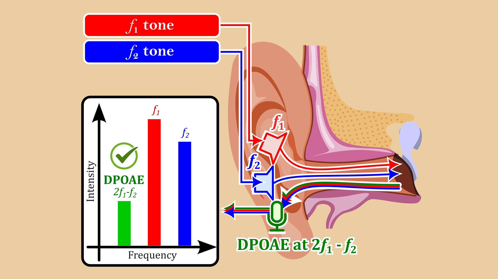
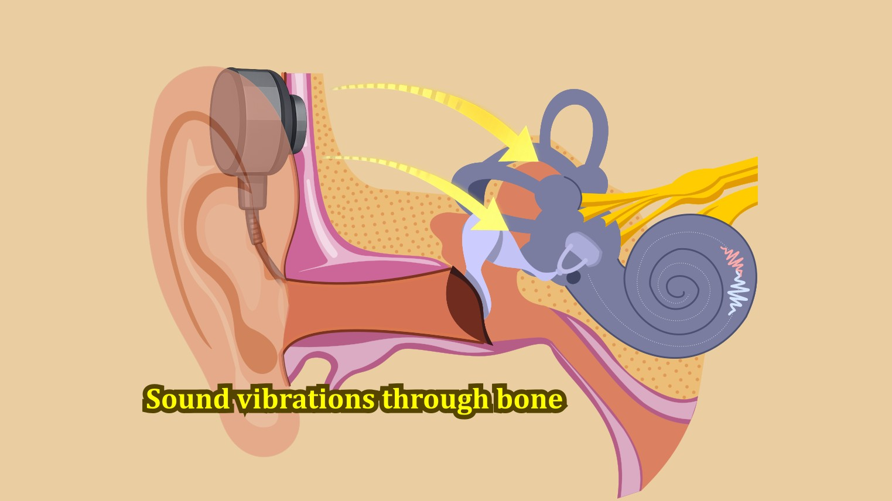
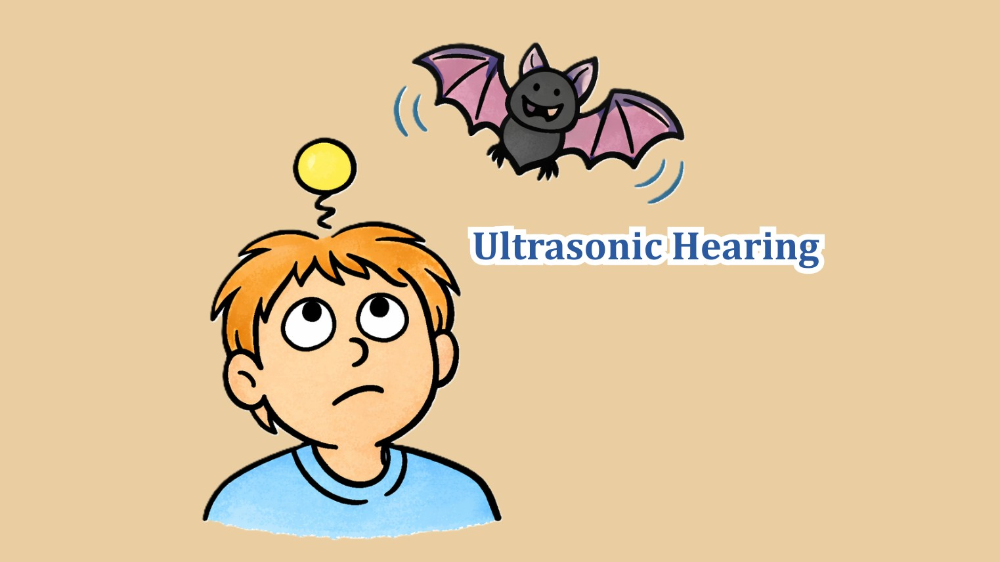

Research
My work focuses on hearing-related acoustics: how we measure hearing, how sound / vibration reaches the inner ear, and how to build practical experimental systems. This page highlights only the main directions.
Distortion Product Otoacoustic Emissions (DPOAE)
Main topicDistortion Product Otoacoustic Emissions (DPOAEs) are very small sounds generated by the inner ear (cochlea) when it is stimulated by two pure tones (f₁, f₂). Due to the nonlinear mechanics of the cochlea, additional frequency components are produced, the most prominent being 2f₁–f₂. Because they reflect outer hair-cell function, DPOAEs are widely used for objective hearing assessment in both research and clinical settings.
- Objective assessment of outer hair-cell function.
- Non-invasive measurement using probe microphone systems.
- Applications in hearing screening, research, and auditory physiology.

Bone Conduction Hearing
Main topicBone conduction (BC) allows sound to be perceived through vibration. When a vibrator is placed on the head, mechanical vibration can be transmitted directly to the cochlea in the innear ear. Because several transmission paths contribute to the resulting cochlear response, making BC an important topic in auditory physiology and applied acoustics.
- Multiple vibration pathways contribute to cochlear stimulation.
- Transmission depends on placement, coupling force, and head anatomy.
- Applications in auditory research and bone-conduction devices.

Ultrasonic Hearing
Main topicUltrasonic hearing explores perception and physiological responses to acoustic stimulation beyond the conventional audible range. In bone-conducted ultrasonic stimulation, mechanical vibration applied to the head can evoke auditory sensations even at frequencies above typical hearing limits. Because these signals extend beyond typical hearing limits, experiments must be carefully designed and controlled to reveal the underlying mechanisms of ultrasonic perception.
- Bone-conducted ultrasonic stimulation beyond audible limits.
- Evaluating perception/response trends and measurement repeatability.
- Connecting physical quantities (signal level / vibration / coupling) to observed outcomes.

Others
RelatedMy background is in computer science, with experience in acoustic signal processing and related computational methods. Previous work includes speech separation and enhancement, sound localization, real-time noise cancellation, loudspeaker arrays, and audio-based biometrics, as well as application development and hardware–software integration (e.g., mobile apps and 3D-printed devices). These experiences continue to support my current research in experimental acoustics and hearing.